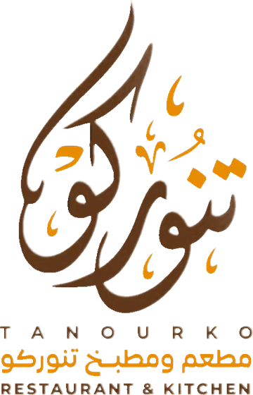
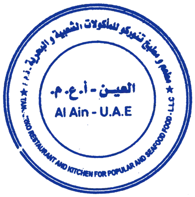
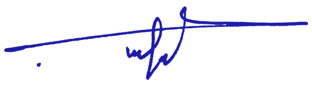

TANOURKO RESTAURANT & KITCHEN
إن إدارة مطعم ومطبخ تنوركو، وبناءً على مقتضيات مصلحة العمل، تقرر ما يلي:
تعيين السيد / عصام في وظيفة مسؤول الحسابات في مطعم ومطبخ تنوركو، اعتباراً من تاريخ 25 / 11 / 2026.
يتولى المذكور الإشراف على جميع الأعمال المالية والمحاسبية للمطعم، من متابعة الإيرادات والمصروفات والفواتير والمشتريات، وإعداد التقارير المالية الدورية ورفعها إلى الإدارة.
يُعمل بهذا القرار من تاريخ صدوره، ويُبلَّغ إلى من يلزم لتنفيذه.

